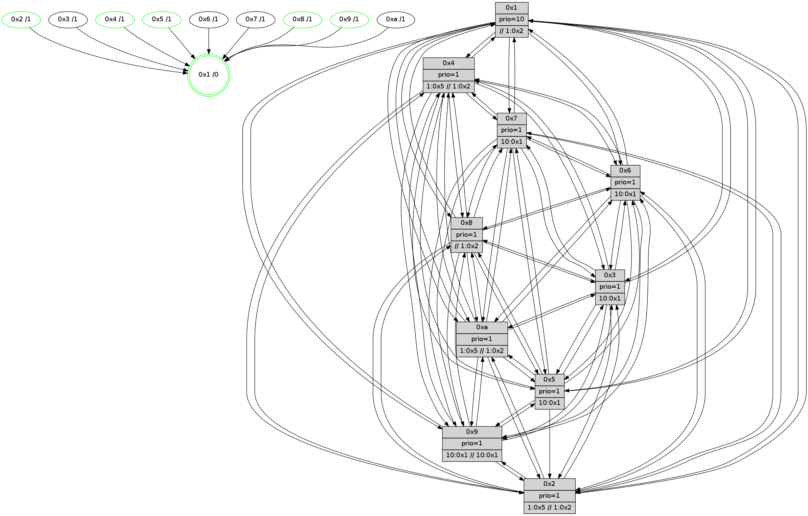

>> << IDX [start] -100 -25 -5 +0 +5 +25 +100 [695.560112]
 Previous packets
----------------------------------------------------------------------
690.043195 beacon01(faad) #0 coord=01,02,03,04,05,06,07,0a,09,08 cycle=688.0ms assoc
-- color-indic=1 64 c4 a1
690.053177 beacon02(faad) #0 coord=01,02,03,04,05,06,07,0a,09,08 cycle=688.0ms assoc 64 57 90
690.063178 beacon03(faad) #0 coord=01,02,03,04,05,06,07,0a,09,08 cycle=688.0ms assoc 64 2d dd
690.073177 beacon04(faad) #0 coord=01,02,03,04,05,06,07,0a,09,08 cycle=688.0ms assoc 64 5a 37
690.083178 beacon05(faad) #0 coord=01,02,03,04,05,06,07,0a,09,08 cycle=688.0ms assoc 64 20 7a
690.093180 beacon06(faad) #0 coord=01,02,03,04,05,06,07,0a,09,08 cycle=688.0ms assoc 64 ae ad
690.103179 beacon07(faad) #0 coord=01,02,03,04,05,06,07,0a,09,08 cycle=688.0ms assoc 64 d4 e0
690.113183 beacon0a(faad) #0 coord=01,02,03,04,05,06,07,0a,09,08 cycle=688.0ms assoc 64 a5 eb
690.123183 beacon09(faad) #0 coord=01,02,03,04,05,06,07,0a,09,08 cycle=688.0ms assoc 64 2b 3c
690.133184 beacon08(faad) #0 coord=01,02,03,04,05,06,07,0a,09,08 cycle=688.0ms assoc 64 51 71
690.145619 [Hello(10): seq=375 sym=6,2,3,8,9,5,7,4,1 sysInfo=hasWarning stat=6:11,2,5,2/2:11,1,11,1/3:15,1,11,4/8:6,0,1,6/9:14,3,0,4/5:13,11,0,8/7:8,12,2,3/4:7,1,12,6/1:9,9,5,1]
690.148342 [Color(1) seq=123 @0:0 prio=10 >>1.@2,1.@3,1.@4]
690.149938 [Color(4) seq=86 @0:0 prio=1 >1.@5 >>1.@2,1.@3,1.@4]
690.151685 [Hello(9): seq=386 sym=5,2,3,4,7,6,8,10,1 sysInfo=hasWarning stat=5:15,3,15,8/2:1,12,7,5/3:1,8,15,7/4:4,5,0,5/7:10,6,6,3/6:3,11,1,5/8:15,7,8,2/10:15,6,5,7/1:7,11,6,1]
690.154505 [Color(9) seq=91 @0:0 prio=1 >10.@1,1.@2,1.@3,1.@5 >>10.@1,1.@2,1.@3]
690.156936 [Hello(5): seq=443 sym=7,6,4,3,1,9,8,10,2 sysInfo= stat=7:7,15,5,4/6:6,0,4,6/4:1,10,14,5/3:10,5,14,5/1:10,0,3,1/9:9,0,2,3/8:13,2,13,4/10:4,11,4,5/2:5,8,1,0]
690.159944 [Hello(2): seq=439 sym=4,5,7,6,3,9,8,10,1 sysInfo=hasWarning stat=4:12,13,1,4/5:3,9,0,1/7:15,11,6,4/6:1,3,3,5/3:2,8,15,2/9:8,8,15,1/8:3,7,12,4/10:9,1,0,4/1:8,12,15,1]
690.170382 [Color(5) seq=96 @0:0 prio=1 >10.@1,1.@2,1.@3,1.@4]
----------------------------------------------------------------------
690.831327 beacon01(faad) #0 coord=01,02,03,04,05,06,07,0a,09,08 cycle=688.0ms assoc
-- color-indic=1 64 00 af
690.841308 beacon02(faad) #0 coord=01,02,03,04,05,06,07,0a,09,08 cycle=688.0ms assoc 64 93 9e
690.851310 beacon03(faad) #0 coord=01,02,03,04,05,06,07,0a,09,08 cycle=688.0ms assoc 64 e9 d3
690.861309 beacon04(faad) #0 coord=01,02,03,04,05,06,07,0a,09,08 cycle=688.0ms assoc 64 9e 39
690.871309 beacon05(faad) #0 coord=01,02,03,04,05,06,07,0a,09,08 cycle=688.0ms assoc 64 e4 74
690.881308 beacon06(faad) #0 coord=01,02,03,04,05,06,07,0a,09,08 cycle=688.0ms assoc 64 6a a3
690.891310 beacon07(faad) #0 coord=01,02,03,04,05,06,07,0a,09,08 cycle=688.0ms assoc 64 10 ee
690.901314 beacon0a(faad) #0 coord=01,02,03,04,05,06,07,0a,09,08 cycle=688.0ms assoc 64 61 e5
690.911314 beacon09(faad) #0 coord=01,02,03,04,05,06,07,0a,09,08 cycle=688.0ms assoc 64 ef 32
690.921318 beacon08(faad) #0 coord=01,02,03,04,05,06,07,0a,09,08 cycle=688.0ms assoc 64 95 7f
690.932493 [Hello(6): seq=443 sym=2,3,5,4,7,9,8,10,1 sysInfo= stat=2:12,15,12,7/3:9,14,4,6/5:7,15,3,9/4:10,2,4,0/7:2,1,1,0/9:10,15,5,6/8:5,12,4,5/10:13,7,10,6/1:9,5,15,1]
690.935819 [Hello(7): seq=443 sym=2,3,5,6,4,8,9,10,1 sym= sysInfo=hasWarning stat=]
690.939001 [STC(1) #0.60 tree-change,inconsistent-stability,stable,to-color d=0]
690.943077 [Color(8) seq=123 @0:0 prio=1 >>1.@2,1.@3,1.@4]
690.944767 [Hello(4): seq=443 sym=5,7,6,2,3,9,8,10,1 sysInfo= stat=5:8,0,1,7/7:4,15,4,2/6:14,5,5,7/2:14,2,0,7/3:4,5,12,4/9:8,8,1,3/8:15,10,3,7/10:3,9,5,6/1:9,15,4,1]
690.954297 [Hello(3): seq=443 sym=1,7,6,2,4,8,9,10,5 sysInfo= stat=1:1,3,5,1/7:2,0,1,1/6:6,9,14,7/2:4,9,2,8/4:15,14,2,4/8:12,2,0,2/9:15,2,7,6/10:5,8,3,5/5:13,9,2,7]
----------------------------------------------------------------------
691.619457 beacon01(faad) #0 coord=01,02,03,04,05,06,07,0a,09,08 cycle=688.0ms assoc
-- color-indic=1 64 bc aa
691.629440 beacon02(faad) #0 coord=01,02,03,04,05,06,07,0a,09,08 cycle=688.0ms assoc 64 2f 9b
691.639440 beacon03(faad) #0 coord=01,02,03,04,05,06,07,0a,09,08 cycle=688.0ms assoc 64 55 d6
691.649439 beacon04(faad) #0 coord=01,02,03,04,05,06,07,0a,09,08 cycle=688.0ms assoc 64 22 3c
691.659439 beacon05(faad) #0 coord=01,02,03,04,05,06,07,0a,09,08 cycle=688.0ms assoc 64 58 71
691.669441 beacon06(faad) #0 coord=01,02,03,04,05,06,07,0a,09,08 cycle=688.0ms assoc 64 d6 a6
691.679441 beacon07(faad) #0 coord=01,02,03,04,05,06,07,0a,09,08 cycle=688.0ms assoc 64 ac eb
691.689447 beacon0a(faad) #0 coord=01,02,03,04,05,06,07,0a,09,08 cycle=688.0ms assoc 64 dd e0
691.699444 beacon09(faad) #0 coord=01,02,03,04,05,06,07,0a,09,08 cycle=688.0ms assoc 64 53 37
691.709447 beacon08(faad) #0 coord=01,02,03,04,05,06,07,0a,09,08 cycle=688.0ms assoc 64 29 7a
691.720689 [STC(6)->1 #0.60 to-color d=1]
691.722894 [Hello(8): seq=387 sym=5,2,3,4,7,6,9,10,1 sysInfo=hasWarning,coloring-mode-on,ColoringModeIndicationCalled stat=5:6,14,4,7/2:15,3,12,2/3:8,3,1,8/4:0,0,4,6/7:7,13,4,6/6:3,4,0,7/9:13,4,5,5/10:2,12,3,6/1:12,11,4,0]
691.725347 [Color(1) seq=124 @0:0 prio=10 >>1.@2,1.@3,1.@4]
691.726891 [Color(4) seq=87 @0:0 prio=1 >1.@5 >>1.@2,1.@3,1.@4]
691.729075 [Hello(5): seq=444 sym=7,6,4,3,1,9,8,10,2 sysInfo= stat=7:8,15,5,4/6:7,0,4,6/4:2,10,14,5/3:11,5,14,5/1:10,0,4,1/9:9,0,2,3/8:13,3,13,4/10:5,11,4,5/2:5,8,1,0]
691.732602 [Hello(9): seq=387 sym=5,2,3,4,7,6,8,10,1 sysInfo=hasWarning stat=5:0,4,15,8/2:2,12,7,5/3:2,8,15,7/4:5,5,0,5/7:11,6,6,3/6:4,11,1,5/8:15,8,8,2/10:0,6,5,7/1:7,11,7,1]
691.735168 [Hello(2): seq=440 sym=4,7,6,3,9,8,10,1 sysInfo=hasWarning stat=4:13,13,1,4/7:0,11,6,4/6:2,3,3,5/3:3,8,15,2/9:8,8,15,1/8:3,8,12,4/10:10,1,0,4/1:8,12,0,1]
691.737790 [STC(9)->1 #0.60 tree-change,inconsistent-stability,stable,to-color d=1]
691.739479 [Hello(10): seq=376 sym=6,2,3,8,9,5,7,4,1 sysInfo=hasWarning stat=6:12,2,5,2/2:12,2,11,1/3:0,1,11,4/8:6,1,1,6/9:15,4,0,4/5:14,12,0,8/7:9,12,2,3/4:8,2,12,6/1:9,10,6,1]
691.742064 [STC(5)->1 #0.60 tree-change,inconsistent-stability,stable,to-color d=1]
691.743410 [STC(10)->1 #0.60 tree-change,inconsistent-stability,to-color d=1]
691.745264 [Color(5) seq=97 @0:0 prio=1 >10.@1,1.@2,1.@3,1.@4]
691.747384 [Color(9) seq=92 @0:0 prio=1 >10.@1,1.@2,1.@3,1.@5 >>10.@1,1.@2,1.@3]
691.749329 [STC(2)->1 #0.60 tree-change,inconsistent-stability,stable,to-color d=1]
691.751623 [Color(2) seq=89 @0:0 prio=1 >1.@5 >>1.@2,1.@3,1.@4]
691.753898 [STC(7)->1 #0.60 tree-change,inconsistent-stability,to-color d=1]
----------------------------------------------------------------------
692.407587 beacon01(faad) #0 coord=01,02,03,04,05,06,07,0a,09,08 cycle=688.0ms assoc
-- color-indic=1 64 28 73
692.417568 beacon02(faad) #0 coord=01,02,03,04,05,06,07,0a,09,08 cycle=688.0ms assoc 64 bb 42
692.427569 beacon03(faad) #0 coord=01,02,03,04,05,06,07,0a,09,08 cycle=688.0ms assoc 64 c1 0f
692.437571 beacon04(faad) #0 coord=01,02,03,04,05,06,07,0a,09,08 cycle=688.0ms assoc 64 b6 e5
692.447570 beacon05(faad) #0 coord=01,02,03,04,05,06,07,0a,09,08 cycle=688.0ms assoc 64 cc a8
692.457570 beacon06(faad) #0 coord=01,02,03,04,05,06,07,0a,09,08 cycle=688.0ms assoc 64 42 7f
692.467571 beacon07(faad) #0 coord=01,02,03,04,05,06,07,0a,09,08 cycle=688.0ms assoc 64 38 32
692.477576 beacon0a(faad) #0 coord=01,02,03,04,05,06,07,0a,09,08 cycle=688.0ms assoc 64 49 39
692.487575 beacon09(faad) #0 coord=01,02,03,04,05,06,07,0a,09,08 cycle=688.0ms assoc 64 c7 ee
692.497576 beacon08(faad) #0 coord=01,02,03,04,05,06,07,0a,09,08 cycle=688.0ms assoc 64 bd a3
692.508734 [Hello(3): seq=444 sym=1,7,6,2,4,8,9,10,5 sysInfo= stat=1:1,4,5,1/7:2,0,2,1/6:6,9,15,7/2:5,10,3,8/4:15,15,2,4/8:13,2,0,2/9:0,3,8,6/10:6,8,4,5/5:14,10,3,7]
692.511180 [Hello(1): seq=353 sym=4,2,9,5,10,3,8,6,7 sysInfo=coloring-mode-on,ColoringModeRequestCalled stat=4:15,1,4,0/2:10,1,11,8/9:14,8,5,0/5:10,15,3,0/10:0,15,11,7/3:13,12,0,10/8:0,13,14,6/6:14,10,10,6/7:15,13,0,8]
692.514944 [Hello(6): seq=444 sym=2,3,5,4,7,9,8,10,1 sysInfo= stat=2:13,0,13,7/3:10,14,4,6/5:8,0,4,9/4:11,3,4,0/7:3,1,2,0/9:11,0,6,6/8:6,13,4,5/10:14,7,11,6/1:9,6,0,1]
692.520251 [Hello(4): seq=444 sym=5,7,6,2,3,9,8,10,1 sysInfo= stat=5:9,1,2,7/7:4,15,5,2/6:14,5,6,7/2:15,3,1,7/3:5,5,12,4/9:9,9,2,3/8:0,10,3,7/10:4,9,6,6/1:9,15,4,1]
692.525408 [Color(8) seq=124 @0:0 prio=1 >>1.@2,1.@3,1.@4]
692.528331 [Hello(7): seq=444 sym=2,3,5,6,4,8,9,10,1 sysInfo=hasWarning stat=2:6,13,11,9/3:8,14,6,8/5:7,1,6,11/6:14,9,4,2/4:5,8,1,0/8:12,4,8,4/9:9,10,8,8/10:15,5,9,7/1:1,2,4,1]
----------------------------------------------------------------------
693.195718 beacon01(faad) #0 coord=01,02,03,04,05,06,07,0a,09,08 cycle=688.0ms assoc
-- color-indic=1 64 94 76
693.205701 beacon02(faad) #0 coord=01,02,03,04,05,06,07,0a,09,08 cycle=688.0ms assoc 64 07 47
693.215700 beacon03(faad) #0 coord=01,02,03,04,05,06,07,0a,09,08 cycle=688.0ms assoc 64 7d 0a
693.225701 beacon04(faad) #0 coord=01,02,03,04,05,06,07,0a,09,08 cycle=688.0ms assoc 64 0a e0
693.235700 beacon05(faad) #0 coord=01,02,03,04,05,06,07,0a,09,08 cycle=688.0ms assoc 64 70 ad
693.245701 beacon06(faad) #0 coord=01,02,03,04,05,06,07,0a,09,08 cycle=688.0ms assoc 64 fe 7a
693.255703 beacon07(faad) #0 coord=01,02,03,04,05,06,07,0a,09,08 cycle=688.0ms assoc 64 84 37
693.265705 beacon0a(faad) #0 coord=01,02,03,04,05,06,07,0a,09,08 cycle=688.0ms assoc 64 f5 3c
693.275706 beacon09(faad) #0 coord=01,02,03,04,05,06,07,0a,09,08 cycle=688.0ms assoc 64 7b eb
693.285706 beacon08(faad) #0 coord=01,02,03,04,05,06,07,0a,09,08 cycle=688.0ms assoc 64 01 a6
693.297166 [Hello(10): seq=377 sym=6,2,3,8,9,5,7,4,1 sysInfo=hasWarning stat=6:13,2,5,2/2:12,3,12,1/3:1,1,11,4/8:6,2,1,6/9:15,5,0,4/5:14,13,0,8/7:10,12,3,3/4:9,2,12,6/1:9,10,6,1]
693.299609 [Hello(8): seq=388 sym=5,2,3,4,7,6,9,10,1 sysInfo=hasWarning,coloring-mode-on,ColoringModeIndicationCalled stat=5:7,15,5,7/2:0,4,13,2/3:9,3,1,8/4:0,1,4,6/7:8,13,5,6/6:3,4,0,7/9:14,5,6,5/10:3,12,4,6/1:12,12,4,0]
693.302150 [Hello(9): seq=388 sym=5,2,3,4,7,6,8,10,1 sysInfo=hasWarning stat=5:0,4,15,8/2:2,13,8,5/3:3,8,15,7/4:6,5,0,5/7:12,6,7,3/6:5,11,2,5/8:0,9,8,2/10:0,6,5,7/1:7,11,7,1]
693.304669 [Hello(2): seq=441 sym=4,7,6,3,9,8,10,1 sysInfo=hasWarning stat=4:14,13,1,4/7:1,11,7,4/6:3,3,4,5/3:4,8,15,2/9:8,8,15,1/8:4,9,12,4/10:10,1,0,4/1:8,12,0,1]
693.307489 [Color(4) seq=88 @0:0 prio=1 >1.@5 >>1.@2,1.@3,1.@4]
693.309428 [Color(2) seq=90 @0:0 prio=1 >1.@5 >>1.@2,1.@3,1.@4]
693.311188 [Color(9) seq=93 @0:0 prio=1 >10.@1,1.@2,1.@3,1.@5 >>10.@1,1.@2,1.@3]
693.313622 [Hello(5): seq=445 sym=7,6,4,3,1,9,8,10,2 sysInfo=hasWarning stat=7:9,15,6,4/6:8,0,5,6/4:3,10,14,5/3:12,5,14,5/1:10,0,4,1/9:9,1,2,3/8:14,4,13,4/10:5,11,4,5/2:5,9,2,0]
693.316781 [Color(5) seq=98 @0:0 prio=1 >10.@1,1.@2,1.@3,1.@4]
----------------------------------------------------------------------
693.983849 beacon01(faad) #0 coord=01,02,03,04,05,06,07,0a,09,08 cycle=688.0ms assoc
-- color-indic=1 64 50 78
693.993831 beacon02(faad) #0 coord=01,02,03,04,05,06,07,0a,09,08 cycle=688.0ms assoc 64 c3 49
694.003832 beacon03(faad) #0 coord=01,02,03,04,05,06,07,0a,09,08 cycle=688.0ms assoc 64 b9 04
694.013832 beacon04(faad) #0 coord=01,02,03,04,05,06,07,0a,09,08 cycle=688.0ms assoc 64 ce ee
694.023833 beacon05(faad) #0 coord=01,02,03,04,05,06,07,0a,09,08 cycle=688.0ms assoc 64 b4 a3
694.033832 beacon06(faad) #0 coord=01,02,03,04,05,06,07,0a,09,08 cycle=688.0ms assoc 64 3a 74
694.043833 beacon07(faad) #0 coord=01,02,03,04,05,06,07,0a,09,08 cycle=688.0ms assoc 64 40 39
694.053837 beacon0a(faad) #0 coord=01,02,03,04,05,06,07,0a,09,08 cycle=688.0ms assoc 64 31 32
694.063838 beacon09(faad) #0 coord=01,02,03,04,05,06,07,0a,09,08 cycle=688.0ms assoc 64 bf e5
694.073837 beacon08(faad) #0 coord=01,02,03,04,05,06,07,0a,09,08 cycle=688.0ms assoc 64 c5 a8
694.085000 [Hello(7): seq=445 sym=2,3,5,6,4,8,9,10,1 sysInfo=hasWarning stat=2:7,14,11,9/3:8,14,6,8/5:7,2,6,11/6:14,9,4,2/4:5,9,1,0/8:12,4,8,4/9:10,11,8,8/10:0,5,9,7/1:1,2,4,1]
694.088157 [Hello(6): seq=445 sym=2,3,5,4,7,9,8,10,1 sysInfo= stat=2:14,1,13,7/3:10,14,4,6/5:9,1,4,9/4:12,4,4,0/7:4,1,2,0/9:12,1,6,6/8:6,14,4,5/10:15,7,11,6/1:9,6,0,1]
694.090894 [Hello(3): seq=445 sym=1,7,6,2,4,8,9,10,5 sysInfo= stat=1:2,5,5,1/7:3,0,2,1/6:7,9,15,7/2:6,11,3,8/4:0,0,2,4/8:13,3,0,2/9:1,4,8,6/10:7,8,4,5/5:14,11,3,7]
694.093528 [Color(8) seq=125 @0:0 prio=1 >>1.@2,1.@3,1.@4]
694.097499 [Hello(4): seq=445 sym=5,7,6,2,3,9,8,10,1 sysInfo= stat=5:10,2,2,7/7:5,15,5,2/6:14,5,6,7/2:15,4,1,7/3:5,5,12,4/9:9,10,2,3/8:0,11,3,7/10:5,9,6,6/1:9,15,4,1]
694.100096 [Hello(1): seq=354 sym=4,2,9,5,10,3,8,6,7 sysInfo=coloring-mode-on,ColoringModeRequestCalled stat=4:0,1,4,0/2:10,1,11,8/9:14,8,5,0/5:10,0,3,0/10:1,15,11,7/3:13,12,0,10/8:0,14,14,6/6:15,10,10,6/7:0,13,0,8]
----------------------------------------------------------------------
694.771981 beacon01(faad) #0 coord=01,02,03,04,05,06,07,0a,09,08 cycle=688.0ms assoc
-- color-indic=1 64 ec 7d
694.781963 beacon02(faad) #0 coord=01,02,03,04,05,06,07,0a,09,08 cycle=688.0ms assoc 64 7f 4c
694.791962 beacon03(faad) #0 coord=01,02,03,04,05,06,07,0a,09,08 cycle=688.0ms assoc 64 05 01
694.801964 beacon04(faad) #0 coord=01,02,03,04,05,06,07,0a,09,08 cycle=688.0ms assoc 64 72 eb
694.811964 beacon05(faad) #0 coord=01,02,03,04,05,06,07,0a,09,08 cycle=688.0ms assoc 64 08 a6
694.821965 beacon06(faad) #0 coord=01,02,03,04,05,06,07,0a,09,08 cycle=688.0ms assoc 64 86 71
694.831965 beacon07(faad) #0 coord=01,02,03,04,05,06,07,0a,09,08 cycle=688.0ms assoc 64 fc 3c
694.841971 beacon0a(faad) #0 coord=01,02,03,04,05,06,07,0a,09,08 cycle=688.0ms assoc 64 8d 37
694.851970 beacon09(faad) #0 coord=01,02,03,04,05,06,07,0a,09,08 cycle=688.0ms assoc 64 03 e0
694.861969 beacon08(faad) #0 coord=01,02,03,04,05,06,07,0a,09,08 cycle=688.0ms assoc 64 79 ad
694.874410 [Hello(10): seq=378 sym=6,2,3,8,9,5,7,4,1 sysInfo=hasWarning stat=6:14,2,5,2/2:13,4,12,1/3:2,1,11,4/8:7,3,1,6/9:0,6,0,4/5:14,14,0,8/7:11,12,3,3/4:10,3,12,6/1:10,11,6,1]
694.877457 [Color(4) seq=89 @0:0 prio=1 >1.@5 >>1.@2,1.@3,1.@4]
694.879363 [Hello(2): seq=442 sym=4,7,6,3,9,8,10,1 sysInfo=hasWarning stat=4:15,13,1,4/7:2,11,7,4/6:4,3,4,5/3:5,8,15,2/9:8,9,15,1/8:4,10,12,4/10:11,1,0,4/1:9,12,0,1]
694.885285 [Hello(8): seq=389 sym=5,2,3,4,7,6,9,10,1 sysInfo=hasWarning,coloring-mode-on,ColoringModeIndicationCalled stat=5:8,0,5,7/2:1,5,13,2/3:9,3,1,8/4:1,2,4,6/7:9,13,5,6/6:3,4,0,7/9:15,6,6,5/10:3,12,4,6/1:13,12,4,0]
694.888962 [Hello(9): seq=389 sym=5,2,3,4,7,6,8,10,1 sysInfo=hasWarning stat=5:1,5,15,8/2:2,13,8,5/3:4,8,15,7/4:7,5,0,5/7:13,6,7,3/6:6,11,2,5/8:0,10,8,2/10:1,6,5,7/1:8,11,7,1]
694.892096 [Color(9) seq=94 @0:0 prio=1 >10.@1,1.@2,1.@3,1.@5 >>10.@1,1.@2,1.@3]
694.897632 [Color(5) seq=99 @0:0 prio=1 >10.@1,1.@2,1.@3,1.@4]